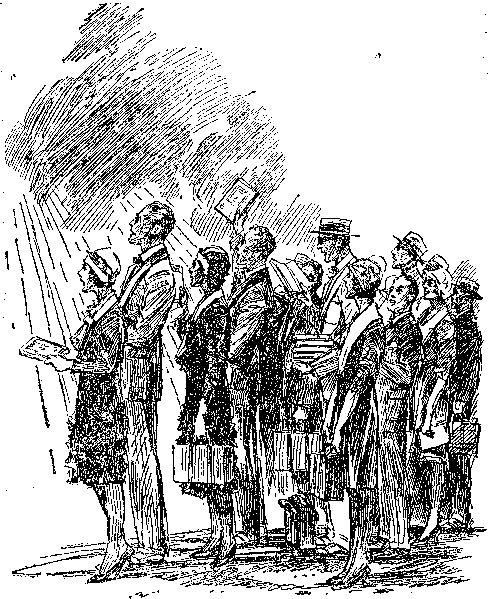

THE
~by
J. F. Rutherford
The combined circulation of Judge Rutherford’s books exceeds 93,500,000
A few of his numerous publications are The Harp of God, Deliverance, Creation, Reconciliation, Government, Life, . Prophecy, and Light
Made in U. S. A.
Copyrighted 1931 and Published by
WATCH TOWER
BIBLE & TRACT SOCIETY INTERNATIONAL BIBLE STUDENTS ASSOCIATION Brooklyn, N. Y., U. S. A.
London, Toronto, Strathfield, Cape Town, Berne, Magdeburg
FOREWORD
THE LAST HOPE! In their extremity people reach for it as a drowning man does for a straw. But the Kingdom of God through Christ is not a mere straw. It is unbreakably sturdy, a sure support for man, and unmovable as the eternal mountains. It is the most practical thing, and is the only thing practicable for man. It is man’s ONLY HOPE!
Acquaint yourself with this real and coming government by reading this booklet.
PUBLISHERS.
THE HOPE OF THE WORLD
WHEN the peoples of the nations of the earth are confronted with a condition that threatens their: very existence it is time for calm and sober thought that, if possible, the cause may be ascertained and that the true remedy may be embraced. To refuse to consider or publicly discuss such unhappy conditions for fear of provoking controversy is worse than folly.
The truth is not controversial with those who are honest. Truth reveals what the people need to know.
The nations of the earth are now in sore need of the truth. The radio is one of the ways God has provided to get the truth to the people, and every radio station on earth should be diligent to broadcast the truth to the people in this very serious time in the affairs of men.
The economic conditions of America are bad. Similar distressing conditions prevail throughout all “Christendom”, yea, in fact, throughout the entire world. A few have grown very rich, while the numbers of the poor are increasing everywhere. It is claimed that there is an excess of production of food and of raiment, while 3
at the same time there are millions starving and suffering from want of proper clothing.
The political conditions are bad everywhere. There is no ruling power or nation that feels safe and secure, and all are unable to cope successfully with the perplexing problems that confront them. Practically all the monarchies have perished from the, earth, and democracy is more unsafe now than it was prior to the World War. s
Moral conditions are also very bad. Crime is on the increase, particularly in the land called "Christendom”, and many women and even youths have fallen to a lower level than that of degraded men. Fear and perplexity grip the people and scarcely anyone feels secure in home, property or body.
Regardless of who is the more reprehensible for these unhappy conditions, the indisputable fact is that fifteen centuries of the operation of "organized Christianity”, so called, has not lifted the human race out of degradation or given to the people hope.
The rulers and the people in all the nations called "Christendom” have claimed to believe that Jehovah is God, and have expressed faith in the Bible as his Word, and in Christ Jesus as the Savior of man. The question is now put squarely up to the rulers and to the people, to wit, Is that claim true and sincere? Jesus, with absolute authority, concerning God’s Bible said: "Thy word is truth.” If we believe that
Jehovah is the true God, then why should we longer halt between his Word and the opinions or theories of imperfect men? I earnestly invite the rulers and the people to carefully consider the Bible in the light of present-day events, because therein is found the full information concerning the cause of the world distresses and therein is plainly stated the only hope for man’s relief and deliverance.
Jehovah, the God of the Bible,' is the only true God. He is the source of all life. Centuries ago he gave his word of promise that in his due time he would establish a government that would rule the world in righteousness and that under that government the rich and the poor, the strong and the weak, the Jews and Gentiles, the bond and the free, should all have an opportunity for the blessings of liberty, prosperity, happiness and life everlasting. (Gen. 22:18; Isa. 9:6,7) That promise being true, the day must come when those on earth would know that it is time for the establishment of God’s kingdom or government and for the blessings of the people to begin.
Satan the Devil has long been the invisible ruler of this world. He is the adversary or opposer of the true God, and the worst enemy of man, and has led the people into degradation that he might turn them all away from Jehovah. God could have restrained or killed Satan long ago, to be sure, but perfect wisdom marked out a different course. God first sent Jesus to the earth to provide redemption for the human
race, and this Jesus did by the shedding of his own life-blood at Calvary.
When God raised up Jesus out of death and brought him into heaven, he said to him, as recorded in the 110th Psalm: "Wait until my due time comes to put the enemy Satan down, and to set up the righteous rule? In that period of waiting God has been taking out from amongst men a people for his name.
In that same time God has permitted the peoples of earth to try to form and carry on desirable governments. The nations called ""Christendom” agreed and undertook to do that very thing. These agreed to accept the Bible as their own guide, and during the past fifteen centuries have set up governments and claimed that such governments have ruled as the representatives of God on the earth. The facts, however, are that these nations in particular have forgotten God and have turned away from him and have come completely under the influence of Satan, the enemy of God.
In 1914 the period of waiting named by Jehovah came to an end. Prior to that time Satan, the invisible ruler amongst men, had carried on without interference, but when God’s due time came he sent forth Christ Jesus to be the King of the world. He placed Jesus Christ upon -the throne of authority. (Ps. 2:6) In harmony with the Bible testimony of Revelation and other scriptures there immediately followed a war in heaven, with Christ and his angels on one side, and against Satan and his angels on the other side. That conflict resulted in Satan’s being cast out of heaven and down to the earth, and from then till now Satan the Devil is confining his operations exclusively to things of the earth. You wonder why the economic, the political and the moral conditions are so terrible in this day, and why they continue to grow worse. The answer is found in Revelation 12:12 in these words: “Woe to the inhabiters of the earth, and of the sea! for the devil is'come down unto you, having great wrath, because he knoweth that he hath but a short time.”
It was in 1914 that the war in heaven took place, and it was in that same year that Satan plunged the nations of “Christendom” into the great World War. Now call to mind that since the ending of that war conditions have continuously grown worse in the earth. The agencies of Satan falsely charge Jehovah God with the responsibility for the calamities and crimes and wickedness that now afflict the nations and the people. Satan’s purpose in making this false charge is to cause the people to curse Jehovah God and to turn away from him. Satan’s scheme is to induce the people to ignore the Bible and its authority and to look to men for aid and deliverance. Satan is thus practicing a great fraud upon mankind, and for this reason you see a studied effort to discredit the Bible and to keep the people in ignorance of its testimony.
Jehovah’s kingdom is already here. He has placed Christ Jesus, earth’s, rightful Ruler, upon his throne of authority. Why then does
not God destroy Satan and his organization and relieve the people ? That is exactly what God is now about to do; but before so doing there is another work he will have done, and of this the people must now be informed.
God made man a free moral agent with the right to choose the course he will take. No man, however, could make such a choice without some knowledge. The World War ceased in 1918 for the very purpose of permitting a testimony to be given to the nations in order that the people might have an opportunity to choose the course they would take, that is to say, whether they would give their allegiance to God and his kingdom of righteousness or would continue to rely upon the feeble efforts of men. By the events of the World War, famine, and pestilences, and great distress that befell the nations during and after 1914, the second coming of Christ and his kingdom are clearly proven.
To those who have seen and believed these evidences, and who have devoted themselves to Jehovah, the commandment is given, in Matthew 24:14, to wit: “This gospel of the kingdom shall be preached in all the world for a witness unto all nations; and then shall the end come.” “This gospel,” or good news, must be told to “Christendom” now in order that the people might choose to give their allegiance to God and his kingdom under Christ. In obedience to this commandment men and women, with the aid of the radio and of books containing the message of truth, have gone, and are still going, to the
people with the facts. A few have heard and rejoiced, while others have opposed, and multitudes remain indifferent.
■ WARNING
It is apparent that a universal government of righteousness could not be fully established in the earth until first Satan’s wicked power and his organization are destroyed. Until criminals are fully restrained or destroyed there could be no freedom from crime and no safety to the lovers of righteousness. Until political dishonesty is destroyed there could be no righteous rule of the people. Until economic injustice and oppression cease to exist there could not be complete relief to the people. Until religious hypocrisy is destroyed the light of truth cannot shine fully into the minds of the people.
Therefore the first work of God’s kingdom of righteousness under Christ the King is to destroy the wicked organization of Satan and clear the ground, that there may be fully and completely established in the earth the righteous and peaceful rule of the people. For this reason it is written, in Revelation 16:13-16, that the combined forces of wickedness, under Satan, and the combined forces of righteousness, under Christ, are marching to Armageddon, which will mark the greatest battle and be a time of the greatest tribulation the world has ever known.
By his prophets Isaiah, Jeremiah and Ezekiel God has written his decree against "Christendom”, and she must fall. What is here said is not to be considered as a threat against any creature, but it is a warning to both the rulers and the ruled of “Christendom”. Upon those who are devoted to God the obligation is laid to give this warning, and if they should fail to ■ do so Jehovah would make the very stones to cry out and tell the people. ,
“Christendom” is composed of the nations that call themselves “Christian”, and chief amongst these nations are those of America and the British Empire. Because “Christendom” has claimed to follow Christ Jesus such nations thereby entered into an implied contract, at least, to give heed to and to do the will of God; and for this reason greater responsibility rests upon these nations than upon the nations which are called “heathen”.
Today “Christendom” occupies a position corresponding exactly to that occupied by Jerusalem at the time of her destruction. Jerusalem was a type of “Christendom”; therefore the warnings given to Jerusalem by the prophets of Jehovah apply with stronger force to “Christendom” at this time. I wish that the rulers and the people might understand that nothing is here stated to provoke a controversy, but that the information is given as a warning because it is the will of God and because the people need to have this information before the greatest trouble that ever afflicted humankind falls upon them.
For “Christianity” there is just ahead the worst trouble that has ever befallen any nation. The reasons therefor are given by the Prophet Isaiah (24:3-5) in these words: “[Jehovah] hath spoken this word. . . . The world languished, and fadeth away; the haughty people of the earth do languish. The earth [organized peoples of the earth] also is defiled under the inhabitants thereof, because they have transgressed the laws, changed the ordinance, broken the everlasting covenant.”
The laws of God are set forth in the Bible and define all manner of crimes. The nations of “Christendom” have transgressed every one of these laws and been guilty of all manner of erime. The ordinances for the government of the church of God on earth were plainly announced by Jesus and the apostles and are set forth in the Bible. “Organized Christianity,” or “Christendom”, has changed these divinely provided ordinances and substituted therefor the idolatrous practices of men, thereby bringing great reproach upon the name of Jehovah God. To Noah God stated his “everlasting covenant”, in which is declared the sanctity of human life. Every nation of “Christendom” has broken the everlasting covenant by the unrighteous shedding of innocent human blood. ‘Therefore, says the Lord, his curse is upon the earth, and they that dwell therein are desolate, and the inhabitants of the earth shall be burned and few left.’
The law of all civilized nations denounces adultery or harlotry as a major crime. There is another great crime committed by organizations that have taken the name of the Lord, and which crime God names and denounces as adultery or harlotry. That crime consists in mixing God's truths with the wicked things of the Devil and following Satan’s practices. Addressing those who have thus done, and defining the crime, it is written, in James 4:4: "Ye adulterers and adulteresses, know ye not that the friendship of the world is enmity with God? whosoever therefore will be a friend of the world is the enemy of God.” The people are witnesses to the fact that "organized Christianity” today goes hand in hand with the oppressive rulers of the world and is in fact a part of the world.
True Christianity was founded by Jesus, together with his faithful apostles. Concerning it God declares it was planted by him as a noble vine. The duty and obligation laid upon true Christianity was and is to have and to serve but one God and to faithfully follow in the footsteps of Christ Jesus and to give full and unqualified allegiance to God’s kingdom.
Out from the "vine” of true Christianity have grown two great branches, to wit, the Catholic and Protestant religions. No one will attempt to deny the fact that both of these great religious branches have openly allied themselves with the political, commercial and military powers of the world. Today these two great religious organizations, together with their allies
that rule the principal nations of the earth, constitute what is called “Christendom”, or “organized Christianity”. Both of these great branches of professed Christianity have opened their doors and their arms and invited and enticed men, regardless of impurity of faith or conduct, to enter their folds and partake of their delicacies. In order that they might make themselves more attractive, both have changed God’s ordinances of rule and worship in the church and have substituted therefor adulterous practices that have greatly reproached the name of God. Both have made the rich oppressor of the people and the cruel and harsh political ruler the chief or principal ones of their flocks and have pushed aside and oppressed the poor and the needy. ,
The ten tribes of Israel who built their capital city at Samaria foreshadowed the Catholic organization, while the two tribes that built their capital city at Jerusalem foreshadowed the Protestant religious organizations. What God said to those ancient nations through his prophets applies now with greater force and emphasis to modern “Christianity”.
The Catholic nations have had less enlightenment than the Protestant nations; therefore the greater responsibility for the present world condition is upon the Protestant nations. As God punished the Israelites, so he has declared through his prophets that he will inflict great punishment upon “organized Christianity”, and the most severe part of that punishment will
be upon the nations of “Christendom” that are called Protestant. Let the rulers and the people therefore take notice that shortly and within this generation there shall come upon the nations of “Christendom” the worst tribulation that has ever afflicted humankind, and this in order that all may know that Jehovah is the only true God and that his word and name shall be vindicated.
In more recent years there have been gathered together a company of Christian people who have been called by the name and title “Bible Students”. Among these there have been some who have disregarded God's Word, rebelled against his commandments and opposed the public proclamation of his kingdom message and have followed their own selfish course and have brought great reproach upon the name of God. Such the Lord denounces as workers of iniquity who shall suffer destruction with the others of God's enemies. (2 Thess. 2:1-9) To such a warning is now due and is now given.
There are those outside of professed “Christianity” and who call themselves atheists and who are against all who have taken the name of the Lord whether they be false or true Christians. Those who take the lead in this class are such as the nation of Russia, and which class was foreshadowed by the ancient people of Ammon. These atheistic enemies of God and his people have brought great reproach upon his name and his kingdom and have used their powers to keep the people in ignorance of the truth. Now let their rulers and people take notice of what G-od says concerning all who reproach his name. By his prophet Jeremiah he now gives warning to the nations and peoples of the earth in these words, to wit: "For, lo, I begin to bring evil on the city which is called by my name [that is, upon ‘organized Christianity’, or ‘Christendom’, that has taken the name of God and Christ], and should ye [the heathen nations] be utterly unpunished? Ye shall not be unpunished: for I will call for a sword upon all the inhabitants of the earth, saith the Lord of hosts. Therefore prophesy thou against them all these words, and say unto . them, The Lord shall roar from on high, and utter his voice from his holy habitation; he shall mightily roar upon his habitation; he shall give a shout, as they that tread the grapes, against all the inhabitants of the earth. And the slain of the Lord shall be at that day from one end of the earth even unto the other end of the earth; they shall not be lamented, neither gathered, nor buried; they shall be dung upon the ground. Howl, ye shepherds, and cry; and wallow yourselves in the ashes, ye principal of the flock; for the days of your slaughter and of your dispersions are accomplished; and ye shall fall like a pleasant vessel. And the shepherds shall have no way to flee, nor the principal of the flock to escape.”—Jer. 25:29,30,33-35.
Jehovah God by his mighty ‘‘right hand”, Christ Jesus, makes it known that he will smite the hypocritical and oppressive nations and
will completely destroy Satan’s organization, that the people may be free to know and to serve the righteous God and live. Concerning this terrible trouble that is just ahead Jesus said, in Matthew 24:21: “Then shall be great tribulation, such as was not since the beginning of the world to this time, no, nor ever shall be”; but there shall be some saved.
WHO WILL ESCAPE?
Who shall be brought through that great tribulation and have the first opportunity to receive the blessings of the kingdom? Jehovah’s answer is found in Zephaniah 2:1-3. Such are those who try to do right and who want to learn the truth, and for that reason they are undesirable in Satan’s organiz.'.tion, and to them Jehovah says: “Gather yourselves together, yea, gather together, O nation not desired; before the decree bring forth, before the day pass as the chaff, before the fierce anger of the Lord come upon you, before the day of the Lord’s anger come upon you. Seek ye the Lord, all ye meek of the earth, which have wrought his judgment; seek righteousness, seek meekness: it may be ye shall be hid in the day of the Lord’s anger.” To those who at this time are kind and considerate to the poor the Lord Jehovah says: “Blessed is he that considereth the poor; the Lord will deliver him in time of trouble. The Lord will preserve him, and keep him alive; and he shall be blessed upon the earth; and thou
wilt not deliver him unto the will of his enemies”—Ps. 41:1,2.
In the land of “Christendom” today there are millions of people of good will and honest hearts. It is this class of people who, by obeying the above commandment of the Lord, will escape the terrible drubbing which God will, give to “Christendom”, and they will be brought through and be the first recipients of the blessings of his government of righteousness.
HOPE
, The present unrighteous governments of the world can hold out no hope whatsoever to the people. God’s judgment against them declares they must go down. The hope of the world, therefore, and the only hope, is the righteous kingdom or government of God with Christ Jesus as invisible Ruler thereof. Immediately following the great tribulation which is just ahead Christ Jesus the King will begin the reconstruction of the world. He will rule in righteousness, and when his judgments are in the earth the people will learn righteousness. (Isa. 26: 9) He will judge the people in righteousness; which means that then all unrighteousness will be restrained and the people will be led in the right way. (Acts 17:31) As stated in 2 Timothy 4:1, he shall judge the living first, and then the dead. The millions of people that shall survive the terrible trouble and be brought through it will receive instruction, aid and comfort, and the sick will be healed and the weak be made strong.
Under the righteous reign of Christ there will be no multitudes of people starving for bread. By his prophet Isaiah (25: 6) God declares that in that kingdom shall the Lord of hosts make unto the people a feast of fat things, and they shall eat. There will be no bread lines where the poor wait for a hand-out while a few of the rich live wantonly and in luxury, because it is written in the Word of God that Christ shall reign in righteousness and with righteousness shall he judge the poor. (Isa. 11:4; 32:1) Then “the meek also shall increase their joy in the Lord, and the poor among men shall rejoice”. —Isa. 29:19.
There will be no more burdensome taxation for war purposes, because God’s promise is that there shall be no more war. (Isa. 2:2-4) The burdens of the government will be upon the shoulder of the Prince of Peace, and of his government and peace there shall be no end. (Isa. 9:6,7) There will be no more cruel landlords who by unfair means possess and hold the houses and the land and make serfs of the common people, because it is written in the Word of God that in the kingdom of God they shall sit every man under his own vine and fig tree and none shall make them afraid. The people will then build their own houses and live in them and will plant their own crops and eat the fruits thereof and rejoice and be glad.—Isa. 65:21; Mic. 4:1-4.
Worry and distress take millions early into the grave. In the kingdom there will be no occasion for worry and distress. The knowledge of the glory of God shall till the earth, and the people will know that by doing right they shall be made healthy and strong and shall live, because it is written: “Behold, I will bring it health and cure, and I will cure them, and will reveal unto them the abundance of peace and truth.” (Jer. 33:6) ‘Then the inhabitants shall no more say, We are sick.’—Isa. 33: 24.
Under Satan’s wicked rule billions have died and gone into the tomb. Under the righteous reign of Christ these shall be brought out from the grave and given a hope of life. (John 5:28,29) Death has brought indescribable sorrows and crying upon the human race, but under the reign of Christ death and the grave shall be destroyed and all who obey the Lord shall live. (1 Cor. 15:25,26) All the sorrow and suffering and pain that Satan has brought upon the human race God’s kingdom under Christ will take away, as it is written in Revelation 21:4: “And God shall wipe away all tears from their eyes; and there shall be no more death, neither sorrow, nor crying, neither shall there be any more pain; for the former things are passed away.”
Jehovah said to Abraham: Tn thy seed all the families of the earth shall be blessed.’ That promised seed is his Christ, the instrument which God will use to extend to all humankind the blessings of life everlasting. (Gen. 12:3; Gal. 4:8,16,27-29) The Word of Jehovah God is true, and he will fulfill every promise. Satan and his agents have denied the Word of God, reproached his name, and turned the people away from the path that leads to life. The time must come when the word and name of Jehovah will be vindicated; and this he will do in order that the people might know that Jehovah is the Almighty God, the Most High, “the Father of mercies, and the God of all comfort,” and the One alone from whom the blessings of life can come.
The nations of this world are hopeless, and the present governments can hold out no hope whatever to suffering humanity. Why then should the people continue to look to such vain and hopeless schemes as leagues, peace pacts, and hypocritical religion for help? Why look to that which is doomed to a speedy and complete destruction ?
The hope of the world is the kingdom of God under Christ, the Prince of Peace. In this brief space I can call attention to but some of the important parts of the truth concerning that kingdom. I urge upon the people the necessity of informing themselves concerning the kingdom of God. Provide yourselves with the publications or books that will enable you to find these truths in the Bible, and then learn and give heed to them.
The kingdom is already here. God gives commandment that the time has arrived when information thereof must be given to the people. The day of God’s vengeance must be declared in Mhe land, because Jehovah has so commanded.
(Isa. 61:1, 2) Within a brief space of time and within the present generation “Christendom” and the nations that rule therein shall be completely destroyed. This will be done, not by the fighting of the common people against the rich, but will be done by Christ Jesus as the instrument of destruction in the mighty hand of Jehovah God. When this great act is accomplished, and “Christendom” and all workers of iniquity lie as a heap of ashes, all creation will know that the hand of the Almighty God did it. This he will do for the vindication of his name and for the good of all those who love righteousness.
WHO WILL DELIVER THE MESSAGE
This is not a popular message. The leaders and rulers of “Christendom” will deny its truthfulness. They will dispute it and scoff at it. They will scorn and oppose it and denounce those who do deliver the message. It was even so when God's prophet warned Jerusalem. Today there is but one class of men and women under the sun who have the faith and courage to deliver this message of truth concerning the fall of “Christendom” and of Satan’s entire organization and concerning the hope for the people in the kingdom of God, and that class or company of people is made up of those who are wholly devoted to Jehovah and to his kingdom. They seek not the approval of men, nor do they count their earthly lives dear unto them. Their endeavor is only to be obedient to God’s commandments.
While they love Charles T. Russell for his work’s sake as a follower of Christ, they cannot properly be called “Russellites”. While they are students of the Bible, they cannot be rightfully called by the name “Bible .Students” or “Associated Bible Students”. They are the followers of no man, nor do they take the name of any man. Having been bought by the blood of Christ Jesus, justified and begotten by Jehovah, and called to his kingdom, and being wholly and unreservedly devoted thereto, they delight to take the name the Lord gave them, which is Jehovah’s witnesses.
- I therefore offer this resolution and call upon every person who before God and men can truly and honestly claim the qualifications of full devotion to Jehovah and his kingdom to vote for its adoption and then to prove their devotion to Jehovah God, and their allegiance to his kingdom, by giving diligence in sending forth this message of the kingdom of God to the nations and to the peoples of the earth, and to thereby have some part in the vindication of Jehovah’s name.
To the Rulers and to the People :
Be it known: That there is but one true and Almighty God, whose name is Jehovah, the Most High; that there is but one Redeemer of man, whose name is Christ and whom God has anointed and installed as King of the world; and that his Kingdom is now come, and is the hope of the peoples of the world.
That Satan, the Devil, is the great enemy of God and of man. For centuries he has been the invisible ruler of the world, and has brought great reproach upon the name of God and has led men into degradation; that the condition of suffering and distress now in the earth is due to the wickedness of Satan and his agents; that the time has come, as God declares, when Satan’s rule shall for ever end; that in 1914 Satan was cast out of. heaven down to the earth; that within a short time from now Jehovah by Christ will destroy Satan’s power and organization in the earth; that before so doing, however, it is the expressed will and commandment of Jehovah God that his message of warning shall be delivered by his witnesses to the rulers and to the people in order that those who hear may have an opportunity to take their stand on the " 23
side of God and his kingdom and thereby find refuge in the time of trouble; that the testimony of warning that must be given is, in brief, the following:
The leading nations of the earth which claim to be Christian nations, and which are therefore called “Christendom”, have defamed and reproached the name of Jehovah God, and are a part of Satan’s organization and shall suffer destruction.
The other nations, called “heathen”, have also reproached God’s name, are a part of Satan’s organization, and shall also fall. God has given “Christendom” more enlightenment and greater opportunities than the heathen, to all of which “Christendom” has proven unfaithful, . and therefore she shall suffer the greater punishment at the hands of Jehovah. Within a short space of time there shall come upon “Christendom”, which is called by the name of the Lord, the greatest tribulation that has ever befallen any people.—Jer. 25: 29-35.
To enable the people to better understand God’s reason for bringing this tribulation upon the nations the history of the Jews,was caused to be recorded in the Bible and is here mentioned. The Lord has declared that what happened to the Jews typified and foreshadowed what shall come upon “Christendom”, or the professed “Christian” nations of the world. The Jews were God’s covenant people, but they became unfaithful to their covenant and turned to idolatrous practices. God sent his prophets, who warned the Jews of his purpose to destroy their nation because of unfaithfulness. The leaders amongst the Jews ignored the warning, scoffed at the testimony of God's prophets, and then falsely prophesied to the people that no harm was coming to that nation. But shortly thereafter the Jewish nation was swept out of existence. That history is being repeated.
JEHOVAH planted true Christianity as a pure and noble thing, but shortly after the death of the faithful apostles of Jesus Christ the commercial and political rulers of the world, aided and abetted by the clergy, adopted "Christian’ ity” and called it their religion, and then changed the ordinances of God to suit their own selfish purposes, broke the laws of God, and particularly "the everlasting covenant”, and have brought great reproach upon the name of the Most High. Today the leading nations of the world are called "Christian”, and they practice a formalism of religion which is called "the Christian religion”, whereas the leaders thereof deny the inspiration and truthfulness of God's Word, deny the blood of Jesus Christ as the redemptive price of mankind, and deny God's kingdom as the means of restoring and blessing the peoples of earth. "Organized Christianity,” therefore, is an integral part of Satan’s organization and is against God and his kingdom, and hence must be destroyed in order that the kingdom of righteousness may rule the world.
The World War came in 1914, with its attending distressing conditions, and in exact fulfil-
ment of the prophecy of Jesus Christ, and furnished the complete proof to all “Christendom” that the world had ended and that Christ’s kingdom was at hand. (Matt. 24:3-14) These facts were especially called to the attention of the leaders of “Christendom”. Had “Christendom” then given heed to the counsel of God and stood in his Word she might have been spared from destruction. Not only did “organized Christianity” treat the counsel of God with contempt, but she openly endorsed the Devil’s make-shift and called it the political expression of God’s kingdom on earth. “Christendom’s” leaders and commercial, political and religious prognosticators now freely predict that the present condition of suffering and distress is but temporary and will soon pass away and that the nations ruled by unrighteous men will soon establish lasting peace and prosperity. Like the false prophets to the Jews, these present-day predictors prophesy falsely. (Jer. 28:1-17) Let the people take notice that “Christendom” will never recover, but soon will go down in the worst tribulation that has ever befallen any nation of the world. Her destruction will not come by the poor people fighting against the rich, but will result from the punishment inflicted by Jehovah God and his King.—Rev. 19:11-21.
Jehovah declares that there shall be such a great number of people slain in the time of trouble that the survivors will not bury them; but further states that some portion of the people will be spared, taken through the trouble and saved; and that the ones spared will be those who now seek to know and to do God’s will.
The hope of the world is God's kingdom, and there, is no other hope. Immediately following the great tribulation Jehovah’s kingdom will establish peace and prosperity in the earth. All order-loving people should therefore be diligent now to learn of and concerning the kingdom of God, and should take their stand on the side of his kingdom and give their allegiance to God and his King and thus put themselves in line for the everlasting blessings that shall come to those who are obedient and faithful to Jehovah and his King.
This testimony of warning is not given by "another religious cult that is engaged in propaganda or in proselyting”. It is given by Jehovah’s witnesses. Those who give this testimony do not seek members or solicit money. Upon all those who have wholly devoted themselves to his kingdom, Jehovah has laid the obligation to give this testimony of warning. The responsibility is upon these witnesses to give the testimony and warning, and those who hear are responsible to God for what course they take.
We declare our allegiance is wholly to God and his kingdom, and we delight to be his witnesses and to bear his testimony to the honor of his name. Our faith forbids and precludes us from engaging in war or in any other enterprise that would work harm or injury to mankind.
We are for Jehovah’s kingdom of everlasting peace.
The time is due for the vindication of Jehovah’s great name, and as his authorized witnesses, and in obedience to his commandment, we do now solemnly declare this warning and deliver this testimony.
Within a very short time God will destroy all of Satan’s organization, which includes "Christendom” and all the nations that oppress the people and defame, his name. Immediately following that great destruction, God by Christ will fully establish his government of righteousness in all the earth. Let the people therefore cease to give heed to schemes of reform brought forth by men. The kingdom of Jehovah God is the hope of the world. Let all who love righteousness give full allegiance to Jehovah and to his kingdom and receive his blessings.
An international convention of Christian people was held in Columbus, Ohio, July 24 to 30, 1931. They were gathered together from various nations of the earth, representing many languages. At a large mass meeting held on the 26th of July there was unanimously adopted the following resolution, which is sent forth for the information of the peoples of the world.
[Publisher’s note]
Whereas, about 1874, in fulfilment of divine prophecy, the Lord Jesus Christ began the work of ‘preparing the way before Jehovah’ and to restore to his faithful followers on earth a clearer understanding of the fundamental truths taught by Jesus and his apostles and which'for centuries had been made obscure by others’ teaching false doctrines; and
Whereas from and after that date, for a period of more than forty years, Charles T. Russell, a faithful follower of Christ Jesus and a servant of Jehovah God, led a company of his brethren in Christ in the preaching and teaching of the divine Word, and particularly with reference to the second coming of Christ, the setting up of his kingdom, and the restoration 29
of man to perfection on the earth; and to carry on said work orderly said company of Christians organized the corporations known as the Watch Tower Bible & Tract Society, the International Bible Students Association, and the Peoples Pulpit Association, and they used and now use these corporations for the publication of books, magazines and other Bible literature; and in the course of time said company of Christians became known by such names as, to wit, “Russellites,” “Millennial Dawn People,” “International Bible Students Association,” and other like names; and
Whereas shortly- following the death of Charles T. Russell a division arose between those associated with him in such work, resulting in a number of such withdrawing from the Watch Tower Bible & Tract Society, and who have since refused to cooperate with said Society and its work and who decline to concur in the truth as published by the Watch Tower Bible & Tract Society, in The Watch Tower and the other recent publications of the abovenamed corporations, and have opposed and do now oppose the work of said Society in declaring the present message of God’s kingdom and the day of the vengeance of our God against all parts of Satan’s organization; and said opposing ones have formed themselves into divers and numerous companies and have taken and now bear such names as, to wit, “Bible Students,” “Associated Bible Students,” “Russellites teaching the truth as expounded by Pastor Russell,” “Stand-Fasters,” and like names, all of which tends to cause confusion and misunderstanding :
Now, therefore, in order that our true position may be made known, and believing that this is in harmony with the will of God, as expressed in his Word, be it resolved, as follows, to wit:
That we have great love for Brother Charles T. Russell, for his work’s sake, and that we gladly acknowledge that the Lord used him and greatly blessed his work; yet we cannot consistently with the Word of God consent to be called by the name “Russellites”; that the Watch Tower Bible & Tract Society and the International Bible Students Association and the Peoples Pulpit Association are merely names of corporations, which corporations we as a company of Christian people hold, control and use to carry on our work in obedience to God’s commandments, yet none of these names properly attach to or apply to us as a body of Christians who follow in the footsteps of our Lord and Master, Christ Jesus; that we are students of the Bible, but, as a body of Christians forming an Association, we decline to assume or to be called by the name “Bible Students” or similar names as a means of identification of our proper position before the Lord; we refuse to bear or to be called by the name of any man;
That, having been bought with the precious blood of Jesus Christ our Lord and Redeemer, justified and begotten by Jehovah God and

God’s Judgment Against Christendom
“Ye have feared the sword; and I will bring a sword upon you, saith the Lord God. Ye shall fall by the sword.>
—Ezek. 11: 8, 10.
Warning Christendom
‘This message must be proclaimed, and then comes the final end.’—Matt. 24:14, 21, 22.
called to his kingdom, we unhesitatingly declare our entire allegiance and devotion to Jehovah God and his kingdom; that we are servants of Jehovah God commissioned to do a work in his name, and, in obedience to his commandment, to deliver the testimony of Jesus Christ, and to make known to the people that Jehovah is the true and Almighty God; therefore we joyfully embrace and take the name which the mouth of the Lord God has named, and we desire to be known as and called by the name, to wit, Jehovah’s witnesses.—Isa. 43:10-12; 62:2; Rev. 12:17.
As Jehovah’s witnesses our sole and only purpose is to be entirely obedient to his commandments ; to make known that he is the only true and Almighty God; that his Word is true and that his name is entitled to all honor and glory; that Christ is God’s King, whom he has placed upon his throne of authority; that his kingdom is now come, and in obedience to the Lord’s commandments we must now declare this good news as a testimony or witness to the nations and to inform the rulers and the people of and concerning Satan’s cruel and oppressive organization, and particularly with reference to “Christendom”, which is the most wicked part of that visible organization; and of and concerning God’s purpose to shortly destroy Satan’s organization, which great act will be quickly followed by Christ the King’s bringing to the obedient peoples of earth peace and prosperity, liberty and health, happiness and everlasting life; that God’s kingdom is the hope of the world and there is no other, and that this message must be delivered by those who are identified as Jehovah’s witnesses.
We humbly invite all persons who are wholly devoted to Jehovah and his kingdom to join in proclaiming this good news to others that the righteous standard of the Lord may be lifted up, that the peoples of the world may know where to find the truth and hope for relief; and, above all, that the great and holy name of Jehovah God may be vindicated and exalted.
JEHOVAH GOD is the great Spirit, “dwelling in the light which no man can approach unto; whom no man hath seen, nor can see,” the blessed and only Potentate, in whom resides supreme power. (1 Tim. 6:15,16) Christ Jesus is the express image of Jehovah, and the heir of all things, and is God’s appointed and anointed King of the world.—Heb. 1:2-4.
The kingdom is properly called God’s kingdom because it is his creation and all the power and authority thereof proceeds from Jehovah. It is called the kingdom of Christ because Christ is the anointed King whom Jehovah has placed upon his throne. (Luke 22:28-30; Ps. 2:6) No human eye can ever see the glorified Lord Jesus Christ, for the reason that he is a spirit and human eyes cannot see a spirit. (John 16:16) Who then will be the visible governors on the earth who will act in behalf of Christ, the invisible King, and for the benefit of mankind?
The proper answer to this question is of very great importance, and that answer must be fully supported by the Bible. It is first answered in brief and then the proof submitted to sustain the correctness of that answer.
The governors of the earth during the reign of Christ, who will be representatives of Christ the great King and act according to his orders, will be the faithful and true men who lived and
36
died fully faithful to God before the coming of Christ Jesus to the earth more than 1900 years ago. Among those faithful representatives of Christ who will act as governors will be Abel,’ Enoch, Noah, Abraham, Isaac, Jacob, Gideon, Jephthae, David, Samson, and all the faithful prophets—Hebrews 11.
For many centuries these men have been dead, but within a short season of time from now they will be raised up out of death and take their places of responsibility on the earth as representatives of the kingdom of God. They will be brought forth from the tomb, perfect in body and in mind, and they will be honest and true and wholly devoted to righteousness and will always act right and in the interest of the people because the Lord will direct their action.
It is very difficult for men to grasp and fully accept the startling truth that good, honest, true and righteous men will manage and direct the affairs of government on earth amongst men, and that no injustice will ever be done by them to anyone. This difficulty is due to the dishonesty that has controlled the rulers of the earth for centuries past. But as the common people come to see and appreciate the truth tremendous burdens will be lifted from them. Dishonesty, oppression and wickedness have prevailed so long in the earth that most people have come to the conclusion that such must ever be the case. But the day of oppression is about to end, and it shall never rise again. (Nah. 1:9) To appreciate this statement, and the further statement that righteousness will prevail forever in the earth under the kingdom of Christ, it is first necessary to understand why dis-
honesty and wickedness were ever permitted to exist on the earth at all. That reason is made clear from the Scriptures, and is here given.
Jehovah God created the first man, called Adam, a perfect man, and made the earth for man’s home. (Isa. 45:12,18) Adam was perfect and the chief one of earth’s creation. (Deut. 32:4) All of earth’s creation, including man, formed a part of God’s organization and was placed under the immediate supervision of Lucifer, who in the Scriptures is called the “covering cherub”, meaning one who had authority over others. (Ezek. 28:13-15) Man being a creature of Jehovah and receiving his life from the Almighty, it was the privilege and duty of man to be faithful and true and to give his complete allegiance to Jehovah God. Lucifer desired to have for himself the allegiance and devotion of man that he might be “like the Most High”. (Isa. 14:12-14) To accomplish his desire Lucifer rebelled against God and induced man to become unfaithful to Jehovah and to give his allegiance to Lucifer. For such wrongdoing man was sentenced to death, and thereafter all men born of Adam and Eve inherited the effects of their wrongdoing and hence are all declared imperfect or sinners. (Ps. 51:5; Rom. 5:12) Adam as a perfect man did not maintain his integrity toward God, and therefore Lucifer defied Jehovah God to put a man on earth who would maintain his integrity toward God and be faithful unto him under the most severe test. That defiance put at issue both the word and name of Jehovah as the supreme power of the universe. God could have killed Lucifer at once, but that would not have settled
the question in the minds of other creatures. God graciously permitted the rebel to make his best endeavor to prove his challenge. Therefore Jehovah accepted the challenge and bided his own good time to prove to all creation that he, Jehovah, is the only true God, the supreme One and the only source of life.
Following the rebellion God changed the name of Lucifer to that of Satan, Devil, Serpent and Dragon, and by these names he has ever since been known. These names alone constitute notice to all creation that the Devil is God's enemy. At the same time God announced his purpose to provide a “seed” that in due time would destroy Satan and his wicked organization and to set up a government of righteousness. That was a mystery not understood for ages after the promise was made. At the present time it is clearly revealed that, in symbolic phrase, God is the “husband” man, and that his “woman” is his organization, and that the promised “seed” produced by the woman (his organization) is the kingdom with Christ Jesus as head or King and the One who is earth’s rightful ruler. Before putting the kingdom in operation there was another great work to be done and which Jehovah did, and that work is this:
Man, by reason of his wrongdoing, was doomed to everlasting destruction unless some provision were made to redeem him. As redemption could be accomplished only by the voluntary death of another perfect man in the place of Adam, God alone could make such provision for redemption. Therefore Jesus was sent to earth and he was made flesh, that is to say, human, born of a woman, and dwelt amongst men
as do other men. (John 1:14; Gal. 4:4) As a man he willingly permitted himself to be put to death as the sinner’s substitute, and thereby he provided the redemptive price or ransom, that men might be recovered from death and its effects. The death of the perfect man Christ Jesus is therefore mentioned in the Scriptures as the great ransom sacrifice, which was made for the benefit of all men. (Heb. 2:8,9; John 3:16,17) Jesus gave his life as a man in order that men might again have the right to live.— Matt. 20:28; John 10:10; 6:48-51.
Before the crucifixion of Jesus, God gave his word of promise to Jesus that he should be the king of the world. (Luke 22:28-30) Jesus told his faithful followers that they should be associated with him in his kingdom and that in some future day he would return from heaven, receive them to himself, and set up his kingdom, and that they might be with him. (John 14:1-4) Jehovah raised up Jesus from death and gave him life and immortality and exalted him into heaven and gave him a name above all other names/and then said to him, Wait now till my due time to make the enemy my footstool and then you shall rule.’ (Phil. 2: 5-11; Ps. 110:1,2; Heb. 10:13) The second coming of Christ and the setting up of his kingdom is therefore the great event to which Christians have looked forward with the keenest possible interest. The time of his second coming is now here and Christ Jesus has returned, and God has placed him upon his throne and he has begun his reign. —Ps. 2:6. .
In the long period of time from Eden until the setting up of the kingdom of the Lord God,
Satan the Devil has had his own way and God has not restrained him, the purpose of Jehovah manifestly being to permit Satan to do his worst so that, when the time came to restrain Satan and destroy his power, all mouths would be for ever stopped from saying that Satan did not have a fair opportunity to prove his challenge that no man would remain faithful and true to Jehovah God. During that long interval of time men have organized governments and tried to rule. Among them there have been many who have been diligent in the effort to make a better and even an ideal government, but they have all fallen far short and have come under the wily and subtle influence of Satan the Devil because they did not devote themselves wholly to God and did not resist the Devil. Most men of the world have followed and practiced some kind of Devil religion and Devil worship and have failed to give their allegiance and devotion to God. There have been some exceptions, and now these faithful ones are next to be considered.
' FAITHFUL MEN
Jehovah makes mention, with specific approval, of three men, to wit, Noah, Daniel and Job, calling them workers of righteousness. (Ezek. 14:14,20) Those three men were doubtless no better mentally and physically than many other men. What, then, could obtain for them the special approval and commendation of Jehovah? Surely not what many have called “character development”, because all men have been born imperfect and no man can bring himself to perfection.
For many years, in the so-called ‘church organization’, the people have been taught.that in order to have the approval of God one must appear to be very pious, gentle .and soft of speech, so that those looking upon him will say, ‘He is such a good man; surely he is ready for heaven.’ That same pious man would see to it that he did nothing that would offend others, and for this reason would often refrain from speaking the truth of and concerning God’s purpose even if he knew it.
What called forth the approval of God of the three men mentioned was their faithful and uncompromising devotion to him. Men who have taken an uncompromising course of faithful devotion to God have never been popular with the world, and the three men mentioned above with the Lord’s approval were not popular in the world. For many years Noah told the people the truth about the coming indignation of God which would be and was expressed in the great flood, and nobody aside from Noah’s immediate family felt kindly toward him. On the contrary, the people mocked and jeered at him. Through all this misrepresentation and persecution Noah was faithful and true to Jehovah and never turned from righteousness.
Daniel steadfastly maintained faithfulness to God under all circumstances. He did not hesitate to speak the truth to the rulers and to the people, and he refused to compromise with any creature of Satan’s organization. Daniel’s three companions are worthy of mention in this connection. Undoubtedly they acted upon advice from Daniel. Those men were all in captivity in Babylon. The king of Babylon made a decree
' *
that, when the band played, all people must fall down and worship a golden image which had been erected to the honor of the Devil and that those who would not obey should be burned alive. Daniel’s three companions refused to bow down because to do so would have been proof of unfaithfulness to God. For this they were cast into a furnace of fire; but God delivered them.
At the present time many people who claim to be devoted to God, when the band plays “God save the king”, or some similar national air, unhesitatingly stand up, like others, thereby giving approval to a form of adulation of men. That is an endorsement of Satan’s organization. Such excuse themselves by saying, ‘I can do this with a mental reservation that I do not mean it.’ But such is a compromise in order to obtain the approval of men. Daniel’s three companions refused to do that, and God approved them and delivered them.—Dan. 3:1-26.
A decree was made by the king that, within a certain period of time, no man should ask a petition of anyone except of the king. The purpose was to catch Daniel in prayer to Jehovah, so that his enemies could have him put to death for a violation of the king’s announced rule. Daniel might have said, T will pray in secret, so that the king will not know I am praying to Jehovah.’ He did not do that, however. On the contrary, he kneeled down by an open window, where he could be seen by anybody passing by, and prayed to God. He refused to compromise either directly or indirectly with any part of the Devil’s organization. For this offense he was cast into a den of lions and, except for the inter-
vention of Jehovah, would have been instantly destroyed. But God stilled the anger of the lions and delivered Daniel unharmed. (Dan. 6:1-23) It was Daniel’s faithfulness and uncompromising devotion that obtained God’s approval and Daniel’s deliverance.
Job was a very rich man and entirely devoted to God. That made Satan angry. Satan challenged Jehovah to let him tempt Job, declaring that he could make Job curse God to his face, and that no man, under certain tests, would maintain his integrity toward God. Jehovah accepted the challenge and let the Devil put Job to a most severe test. The details of such tests and the results are set forth in the book of Job in the Bible. A full explanation is given in the book called Life, which you should read. In all the tribulation and suffering that was inflicted upon Job he remained true and steadfast unto God and held fast his integrity toward God.—Job 2:3.
Such is the reason that the Lord mentions these men with approval. He would make it clear to be understood that those men who maintain their integrity toward him do so by refusing to have any part with Satan’s organization, and continuing faithful, honest and true to God under all conditions.
Many men have claimed to worship God and to follow in the footsteps of Jesus and have taken a compromising course in order that they might have the approval of men, and in doing so they have been displeasing to Jehovah. They express great admiration for men, and want men to admire them. “That which is highly esteemed among men is abomination in the sight of God.” (Luke 16:15) Those who have received and do receive God’s approval do not honor men, but they honor God and are faithful and .true to him. In the eleventh chapter of Hebrews is given a list of names of such men, who were faithful to God under adverse conditions and who remained true and steadfast and maintained their integrity toward the Most High. The only way one can receive the approval of God is to be full of faith and faithful to God. —Heb. 11: 6.
Take your Bible now and carefully read the eleventh chapter of Hebrews, and there will be found a list of men whom God approved because they were all true and faithful to God and to his kingdom. They knew that God had promised to establish a kingdom at some time; but when it would come they did not know. But they were determined to be faithful and true to God and keep themselves in line for the kingdom when it would come. They refused to compromise with the Devil’s crowd, and thereby they held steadfastly their integrity toward God. “These all died in faith, not having received the promises, but having seen them afar off, and were persuaded of them, and embraced them, and confessed that they were strangers and pilgrims on the earth. But now they desire a better [government], that is, an heavenly: wherefore God is not ashamed to be called their God; for he hath prepared for them a city.” (Heb. 11:13,16) Otherwise stated, God has prepared a place in his kingdom for these faithful men. What is that place?
The place could not be in heaven itself, because when Jesus was on the earth these men were all dead, except John the Baptist, and had been dead for some time, and Jesus declared that none of them were in heaven nor ever could be. John the Baptist was one of the prophets" and he can never be in heaven, as Jesus declared. (John 3:13; Matt. 11:11) Paul wrote the book of Hebrews, and he was one of the faithful apostles of Jesus Christ and is in heaven with Christ Jesus as a member of the royal family. Only those who are faithful followers of Christ Jesus from and after his crucifixion and resurrection can ever be in heaven at all, because Jesus was the first one resurrected and he opened the way for others to be taken to heaven. Referring then to the faithful men from Abel to the last of the prophets, all of whom died before the crucifixion of Christ Jesus and who are yet dead, the record at Hebrews 11:39, 40 is: "And these all, having obtained a good report through faith, received not the promise: God having provided some better thing for us [Paul and others who will be in heaven], that they without us should not be made perfect.” This shows that the heavenly class must be completed before the faithful men mentioned, who died before the crucifixion of Christ Jesus, can be made perfect.
The statement above cited in this text clearly shows that God prepared some place for these faithful men in connection with his kingdom, and since they cannot be in heaven they must be somewhere else and be used in connection with the kingdom. The correct answer to the question, then, is that these faithful men will be the visible governors on the earth through and by whom the Lord Jesus Christ, the great King, will administer the affairs of the earth.
The Scriptures frequently speak of those faithful men as ‘the fathers in Israel’ because they were faithful and true to the covenant that God made with the Israelites. When Christ’s kingdom is in operation and these governors represent his kingdom they will no longer be called ‘fathers in Israel’. Upon this point the prophet of God wrote (Ps.45:16): “Instead of thy fathers shall be thy children, whom thou mayest make princes in all the earth.” They will be the children of God through Christ, because Jehovah is the Life-giver and this he gives by and through Christ. ‘Life is a gift of God through Jesus Christ.’ (Rom. 6:23) The word ‘prince’ used in the above Psalm means a governor or one who rules under the emperor or king. Satan has long been the invisible lord or ruler of this wicked world and has ruled in wickedness and has been represented upon earth by imperfect and wicked men. Now God has placed Christ Jesus upon his throne, and he will rule in righteousness. The rulers of the earth for centuries have been under the influence and control of the Devil, whether they have known it or not, and for that reason the rulers have been oppressive and harsh. How will the governors under Christ, the righteous King, rule? That question is answered by the Lord in these words (Isa. 32:1): “Behold, a king [Christ Jesus] shall reign in righteousness, and princes [governors] shall rule in judgment.” Another translator (Rotherham) renders the text: “Lo! in righteousness shall reign a king, yea, even princes with equity shall bear rule.” Under Satan’s reign the visible rulers or governors of this world have often been vile and villainous men working wickedness and speaking against' God, while at the same time the religious leaders in "Christendom”, the clergy, have supported them and declared that they have ruled by divine right. Such a condition could not possibly exist under the righteous reign of Christ. For then "the vile person shall be no more called liberal, nor the churl said to be bountiful”.—Isa. 32:5.
PERFECT GOVERNORS
All the people of good will and honest hearts have longed to see a government that would be administered by men of integrity, truth and honesty; a government administered for the general welfare of the people and not for the special interest of any certain class. Look back over the history of the world and you cannot find one government that ever existed that was administered in righteousness and for the general welfare of mankind. The reason is that during that period of time Satan has been the god or invisible ruler of this world and has blinded the people and the rulers to the truth, and his representatives on the earth have been influenced by him to rule harshly and cruelly. (2 Cor. 4: 3,4; 1 John 5:19; John 12: 31) How then could the people ever hope to see a righteous government established on this earth under the rule of imperfect men? Surely there is no hope for the world or for the people while under the present unrighteous governments. Why then longer look to these unrighteous governments for relief? They are entirely hopeless and can hold out no hope for the people.
The hope of the world is God’s kingdom under Christ, with faithful and righteous men as governors on the earth. Jehovah God has already placed his righteous King, Christ Jesus, upon his throne. Satan and his organization must now get out. Satan refuses to vacate; therefore he is gathering his forces to Armageddon and God is gathering his forces for that battle of the great day of God Almighty. (See Revelation 16:13-16, Light, Book Two, pages 41-57.) In that battle Satan’s cruel, oppressive and wicked organization will be completely destroyed in order that the way may be cleared for the full establishment of the government of righteousness under Christ Jesus.
Those faithful men mentioned in the Bible, from Abel to John the Baptist (Heb. 11), God will raise up out of death and give them life as perfect men. This he will do immediately upon the completion of the royal family of heaven, that is to say, immediately following the selection of all of those who will be in heaven with Christ Jesus. Those faithful men who died before the crucifixion of Jesus ‘did good’ to the best of their ability, and all received a good report, and concerning such Jesus says: ‘All in their graves that have been good shall come forth in the resurrection of life.’ (John 5: 28,29) In a very short time from now, and within the life of the present generation, these faithful men will be brought back and given perfect human life on the earth, and will assume the affairs of government to which they have been appointed, and therefore will be the visible governors amongst all the peoples of the. earth. As members of God’s righteous organization
they will advise, teach and direct the people in the right way to go, in order that the people may receive the blessings which God has prepared for all of those who will be true and faithful to him and his righteous government. The people then will learn righteousness and do that which is right.
It is the privilege and duty of Jehovah’s witnesses now on the earth to announce these great truths to the people, because they are about to come to pass and the Lord will have it made known. To his faithful witnesses who are the followers of Christ Jesus, Jehovah now says (Isa. 42:9): “Behold, the former things are come to pass, and new things do I declare; before they spring forth I tell you of them.” These witnesses of Jehovah are certain that the new and righteous government is now at hand and that these men, mentioned as perfect and visible governors, will be back on the earth within a very short period of time; and it is the commandment of God that the people be told these truths, that they may make preparation for these new and righteous rulers. Therefore Jehovah commands his faithful witnesses to “lift up a standard for the people” that they may go in the right way.—Isa. 62:10.
In obedience to this commandment Jehovah’s witnesses have prepared and published certain books announcing these great truths, setting forth the Scriptural proof and where in the Bible these proof texts may be found, and this is done in order that the people may inform themselves and get in line for the blessings of the kingdom that is now at hand. Among these books are The Harp of God, Deliverance, Crea-
tion, Prophecy, Government, Reconciliation, Life, and Light (Books One and Two), which explain these matters in detail. These books are brought to the people, not for a selfish reason, but that the people may inform themselves of the great events that are now coming to pass. These books are brought to the people at a price less than the cost of publication, but it is best for the people to make some small sacrifice or effort to obtain the information. Times are hard, and money is needed for food, to be sure, but it is better to go without a meal or be hungry for a few hours, that one may provide himself with the food for his mind which will point to him the way of everlasting life. Jehovah God has made complete provision for the relief and blessings of those who love righteousness, and now the time has come for them to begin to know it.
In brief, therefore, the kingdom of God is this: Christ Jesus and his faithful followers constitute the invisible ruling power; faithful men who died in faith and before the’ crucifixion of the Lord will be resurrected as perfect men and made the visible rulers on the earth; and this will constitute a complete working organization which will carry on for the benefit of the peoples of earth and to the honor and glory of Jehovah God. This government will bring complete relief and blessings so long desired by the people.
Let all persons who love truth and righteousness, and who have a desire to see righteousness amongst men on the earth, turn to the Lord God and take their stand on his side now, that they may know the way to everlasting life. “This is life eternal, that they might know thee the only true God, and Jesus Christ, whom thou hast sent.” (John 17:3) Be of good courage and lift up your heads, because deliverance is at hand. The hope of the world is the kingdom of God. Begin now and learn of Him and give honor to His name, and let your hope be firm and strong.
You will appreciate the fact that this message is not propaganda. It will do you no good to join yourself to some earthly organization. This information is given because God has commanded it must be given.—Matt. 24:14.
Jehovah God caused all his holy prophets to write about the kingdom and the blessings it would bring to the people. When Jesus was on earth he was familiar with all these good things to come; therefore he taught his disciples to pray to God: “Thy kingdom come. Thy will be done in earth, as it is in heaven.” And it shall be so. The righteousness that prevails in heaven will soon prevail on the earth, and all oppression shall for ever cease. Concerning this God’s prophet wrote: “He shall judge the poor of the people, he shall save the children of the needy, and shall break in pieces the oppressor. He shall come down like rain upon the mown grass; as showers that water the earth. In his days shall the righteous flourish; and abundance of peace so long as the moon endureth. He shall have dominion also from sea to sea, and from the river unto the ends of the earth.” (Ps. 72:4,6-8) “Surely his salvation is nigh them that fear him; that glory may dwell in our land. Mercy and truth are met together; righteousness and peace have kissed each other. Truth shall spring out of the earth; and righteousness shall look down from heaven. Yea, the Lord shall give that which is good; and our land shall yield her increase. Righteousness shall go before him, and shall set us in the way of his steps.” (Ps. 85:9-13) Therefore let this message of truth be heralded amongst the nations: 'The Lord reign-eth; the world also shall be established that it shall not be moved. He shall judge the people with righteousness and truth.’—Ps. 96:10.
JEHOVAH magnifies the importance of his kingdom above all other doctrines taught in the Bible. He sent Jesus to earth to give a witness concerning the kingdom. Immediately following his temptation in the wilderness Jesus began his earthly ministry with the statement, “The kingdom of heaven is at hand.” It is called the kingdom of heaven because the authority proceeds from heaven. It is called the kingdom of God because God is the great King Eternal, who has made provision for it. It is called the kingdom of Christ because God’s Anointed One, Christ, is the chief officer thereof. But where is the kingdom located?
The improper answer to that question has caused great confusion amongst men. All Christians will be witness to the fact that for centuries the leaders in “Christendom” have answered the question practically in this manner: 'When a man becomes a Christian the kingdom is set up in his heart; and when all are brought to Christ, then the kingdom will be fully established, because Jesus said “the kingdom of God is within you”.’ For this reason they have insisted that 'the church must convert the world, that the kingdom of God may come fully’.
That answer is wholly wrong, and is proof that those who have given such answer are entirely ignorant of the Scriptures.
54
You will note by reading the context of Luke 17: 21 that Jesus was speaking to the Pharisees who had come to Jesus and demanded of Jesus to know when the kingdom would come. It was to them he said, “The kingdom of God is within you.” We know that God would not set up his kingdom in the hearts of his enemies. The Pharisees claimed to represent God, and they were the clergy of that day, but Jesus repeatedly told them that they were hypocrites and sons of the Devil. Read carefully the twenty-third chapter of Matthew and note the scathing denunciation that Jesus laid upon the Pharisees. Then note his words in John 8:42-44, in which he told them that they were of the Devil. There must be something wrong, then, with the answer given by the teachers of “Christendom” to the effect that the kingdom is set up in the hearts of men.
Now take your Bible and read Luke 17:20, 21 and note that the marginal reading is: “The kingdom of God is among you.” The Diaglott renders the text the same way. The plain meaning of the words of Jesus is this: Shortly after 1 Is temptation in the wilderness Jehovah made a covenant with Jesus to give him the kingdom, and he anointed Jesus to be the King whose right it is to rule the world in God’s due time. Jesus, therefore, from that time forward could properly say to those about him: ‘The kingdom is at hand’; meaning that he, Jesus, was the anointed King or Ruler and he was then on earth amongst the people. When the Pharisees came to him, thinking they would catch him in his words, he said to them: ‘The kingdom is among you, or in your midst; because here I am, standing among you, and I am the One anointed of Jehovah for the kingdom.’ The Pharisees understood what Jesus meant, because they afterwards accused him of sedition by reason of his claim to be the King.
The counterparts of the Pharisees are found amongst the leaders in Christendom today. These not only have given a wrongful meaning to the words of Jesus, but have assumed the burden of converting the world, saying that the kingdom of God can never come until the denominational churches bring the people into the church and robe the earth in the moral achievements of man, and that then Christ himself will come and visit the earth. Again their conclusions are entirely wrong and very misleading. Christ Jesus has already come and the kingdom is now among you, and this can be said today with stronger force than ever before.
Shortly after Jesus spoke to the Pharisees he ascended into heaven. Since then his faithful followers have looked for his coming again. In 1914 the period of waiting ended, and then God set Jesus, his anointed King, upon his throne. The Scriptural proof thereof is given by the fact of the World War and incidents that quickly followed. In 1918 Jesus Christ, being present, began to gather unto himself his people who are wholly devoted to God and to his kingdom, and the judgment of all professed followers is now in progress.
The next great act of the anointed King of Jehovah will be to destroy Satan’s organization in the battle of Armageddon, which is just ahead; therefore the people of the land need to be told over and over again this truth, because of its great importance, that the kingdom of God is now among you. That is the reason men and women are going from house to house daily, and particularly on Sunday, delivering this message to the people and bringing to their attention the Scriptural proof in the form of books explaining the Bible. Never was it so important to preach the good news of the kingdom as just now, and when this is done Armageddon will immediately follow.
When Jesus was speaking to the Pharisees he said, in Luke 16:16: “The law and the prophets were until John; since that time the kingdom of God is preached.” John was the forerunner of Christ. All the prophets had foretold the kingdom, but now Jesus began to preach the kingdom and tell them it was at hand. The apostles of Jesus Christ continued preaching concerning the kingdom, but shortly following their death other things were preached. About 1874 the Lord began to bring to the attention of his people the great fundamental truths that had been obscured by the many errors taught by men. From that time until 1914 the work of true Christians was foreshadowed by what John the Baptist did. In 1914 the Lord Jesus came the second time, and in 1918 began to gather together his faithful followers. It was then that his commandment was given and must be obeyed, to preach this good news to the nations of the earth as a witness, and for that reason it is now being done.
Prior to 1918 God’s people on earth, like John the Baptist, were declaring that God’s kingdom is to be set up. From and after 1918 God’s people saw as never before that the King had been placed upon his throne and the kingdom begun and that therefore in obedience to his commandments they must testify to the people of and concerning the kingdom in their midst.
The enemies of God’s kingdom wish to keep the people in ignorance of the fact that the kingdom is here; hence their cry is that a propaganda work is going forward by those who are active witnesses to the Lord. Such is not true, because there could be no propaganda work concerning God’s kingdom. "Propaganda” means to propagate a theory for the purpose of inducing others to join therein. The gospel of the kingdom is merely an announcement of a fact in order that the people may be informed. It is God’s message'and not man’s. God does not indulge in propaganda.
Some have conceived it to be their duty to censor the message that is being given to the people and to cut out certain phrases thereof on the theory that such are controversial. That is very wrong, and anyone attempting it puts himself in a very bad position. God’s message of truth could not be controversial, because it proceeds from Jehovah. There is no attempt to convert anyone or to get anyone into an organization. The sole purpose of delivering the message is to inform the people of the facts? The commandment of the Lord is that this good news shall be told to the peoples of the nations as a witness. Those who do not want to hear need not hear. But no man has the authority to censor the message of God’s Word and thereby prevent some from hearing who desire to hear. Let the people hear and then determine for themselves what course they want to take.
If the message is true, nothing can prevent it from going out, and he who tries to interfere with it assumes a grave responsibility.
Referring to the time in which we now are, God by his prophet says to his faithful witnesses, in Isaiah 60:1, 2: “Arise, shine; for thy light is come, and the glory of the Lord is risen upon thee. For, behold, the darkness shall cover the earth, and gross darkness the people: but the Lord shall arise upon thee, and his glory shall be seen upon thee.” That means that the kingdom has come and those who see it must arise and cry out to the people: “Behold, thy God reigns.”
All observe that at this very time darkness is in the earth and gross darkness upon the people concerning the Word of God, and the whole world is in the very shadow of death because Armageddon is just ahead. God’s commandment is that his witnesses must now serve notice upon the rulers and the people of the impending destruction of “Christendom”, in particular, and of the destruction of Satan’s entire organization, in general, in order that the people who are of good will and honest heart may, if they choose, take their stand on the side of the Lord God and give their allegiance to his kingdom. It is that class of people alone that will escape the worst part of the battle of Armageddon and be brought through. By his prophet Zephaniah the Lord says to such people: ‘Before the fierce anger of the Lord come upon you, seek meekness and righteousness: it may be you shall be hid in the day of the Lord’s anger.’
God lays the responsibility upon his faithful witnesses to declare to the rulers and to the people this message and will hold them guilty if they do not declare it. When his witnesses have delivered the message their responsibility ends. It must therefore be apparent to all that any man or company of men who attempts to abridge or censor that message of the Lord is putting himself in a serious position with the Lord.
The Pharisaical rulers tried to stop God’s witnesses from announcing the kingdom. Their counterparts attempt the same thing today. But the Lord declares this message shall be told to the nations as a witness, and therefore it must be done. Now Christ Jesus, the world’s rightful King, has begun his reign, and the time has come to point out to all order-loving people the way of entrance into the blessings of that kingdom. By no other means can the people ever find relief and blessings. Hence God commands his anointed witnesses in these words (Isa. 62:10): “Go through, go through the gates; prepare ye the way of the people; cast up, cast up the highway; gather out the stones; lift up a standard for the people.”
The “gates”, in this scripture, represent the entrance to the kingdom. "Going through the gates’ pictures the faithful followers of Christ Jesus turning their faces and hearts wholly to the kingdom; and this they do by their course, of action, and thus bear witness to the people that the kingdom is here. "Preparing the way for the people’ means aiding the people to gain a knowledge of and concerning the kingdom. If you knew there was something exceedingly good' in store for all who learn about it and who follow certain rules, your goodness of heart would compel you to tell the people about it. The followers of Christ Jesus know that the great desire of the people, that for which they have long waited, is now just at hand and that it will bring greater blessings than they can either imagine or think. It is the kingdom and its blessings that will be extended to all. Therefore all who love God and their fellow man want to tell others the good news concerning the kingdom. This is not propaganda, nor even an effort to build up some organization. To “gather out the stones”, as the prophet of God says, means to help the people remove from their minds the many errors that have served to stumble them in the way of getting the truth. In telling the people the truth it is necessary to speak to them of the errors taught by the leaders in “Christendom” that have stumbled many. This is not told for the purpose of doing injury to anyone, but it is necessary to thus remove the errors that have kept the people in blindness; and this is done in obedience to God’s commandment. ‘To lift up the standard for the people,’ as the Lord commands, means to point the peoples to the only way of salvation and deliverance. God’s standard is the right standard and points man to the way of life and eternal happiness. Everyone should desire to know about it.
Let everyone, therefore, who hears the good news that the kingdom of heaven is in your midst, and that the reign of Christ has begun, take up the glad tidings and herald it to others and thus have some part in vindicating the name of Jehovah.
i Judge Rutherford’s Latest Book
I Autographed Edition Ready for Delivery
; Jehovah’s prophecy given by Ezekiel more than 2500 years ago has remained a sealed mystery all down the centuries. God’s due time has now come for the prophecy to be understood. I | In his famous clear-cut, straight-from-the- shoulder style, Judge Rutherford gives a truly an astounding and obviously consistent explanation of EZEKIEL’S PROPHECY V
I As explained in Vindication it opens to vision i things that must speedily come to pass.
I As a solemn warning to all Christendom ”, her I rulers and chief men, and to all the world, it ! announces God’s judgment already written against I all who have defamed the name of the Most High.
j It makes known the great tribulation just ahead for the world and how some may be shielded and protected and carried through that trouble. :
| It tells when and how Jehovah God will prove, exonerate and vindicate his Word and holy name, uplift and bless his obedient creation, and make : ij the world a place of everlasting peace and joy. '■
Every intelligent creature should know its contents.
Beautifully clothbound, 352 pages, ’
if autographed edition 50c '
THE MESSAGE
of God’s Kingdom on Earth is the most important, heart-cheering information that any human creature could possibly possess.
Most important because it is a message direct from the great Creator himself, declaring His purposes toward mankind. It is a matter of life or death to every individual on earth.
Heart-cheering because in his message is reiterated many times His purpose to soon completely eradicate from the earth all sin, sorrow, sickness, oppression and death, and in their stead grant health, happiness, prosperity, and everlasting life on earth to all the obedient.
Why waste your time on the vain philosophies of men or the childish babbling of the worldly wise, whose wisdom is foolishness with God, when in Judge Rutherford’s nine books is given a clear, cogent, conclusive explanation of God’s purposes as recorded in the Bible.
JUDGE RUTHERFORD’S BOOKS,
The Harp of God, Deliverance, Creation, Reconciliation, Government, Life, Prophecy, and Light (in two books),
within a short time have attained the astounding distribution of 93% millions.
As you see them on the back cover, all nine clothbound, mailed anywhere, postpaid, on receipt of $2.90.